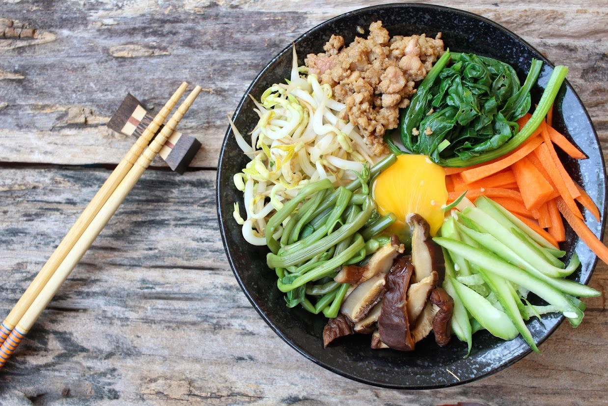

작성자
님의
레시피이름
레시피 입니다
조리시간 :
조리 난이도 :
조리시간
조리 난이도 :
조리난이도
한식
레시피를 소개하는 글을 입력하는 곳
주재료
주재료1
주재료 계량
주재료2
주재료 계량
부재료
부재료1
부재료 계량
양념
양념1
양념 계량
양념2
양념 계량
양념3
양념 계량
조리방법
step1
조리과정설명조리과정설명조리과정설명조리과정설명조리과정설명조리과정설명조리과정설명조리과정설명v
완성된 음식 사진
댓글
| 내용 | 작성자 | 작성일 |
|---|---|---|
| 작성내용dddddddddddddddddddddddddddddddddddddddddddddd | 작성자 | 2021-05-05 12:12:12 |
| 작성내용 | 작성자 | 2021-05-05 12:12:12 |
| 작성내용 | 작성자 | 2021-05-05 12:12:12 |
1 2 3 4 5 6 7 8